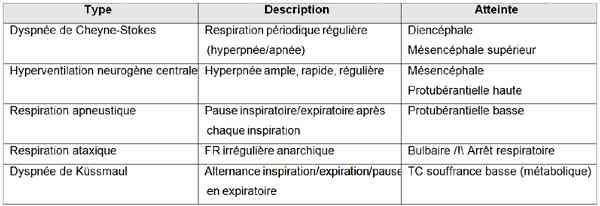
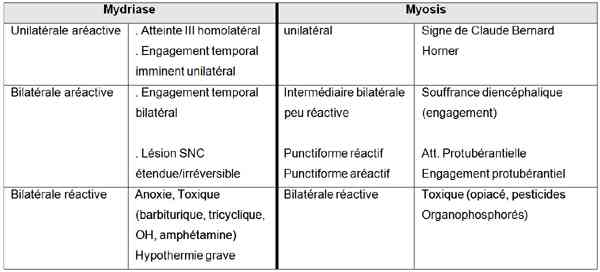
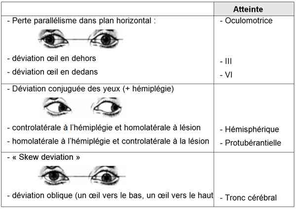
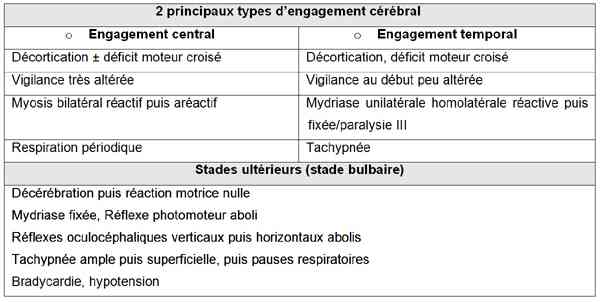
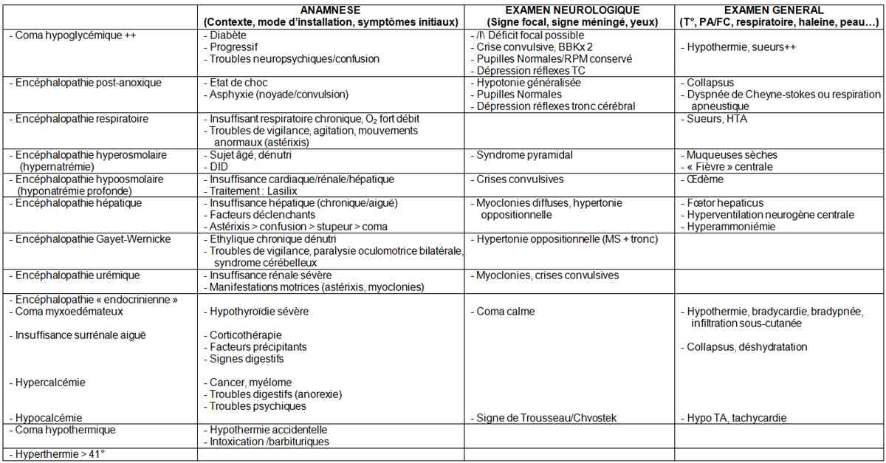
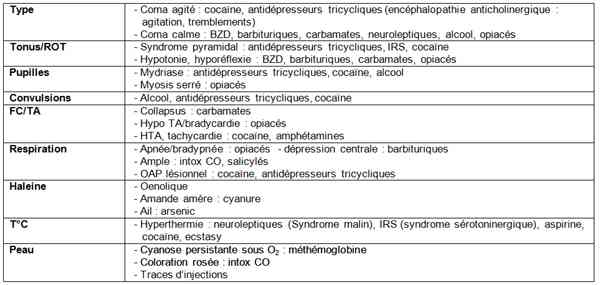
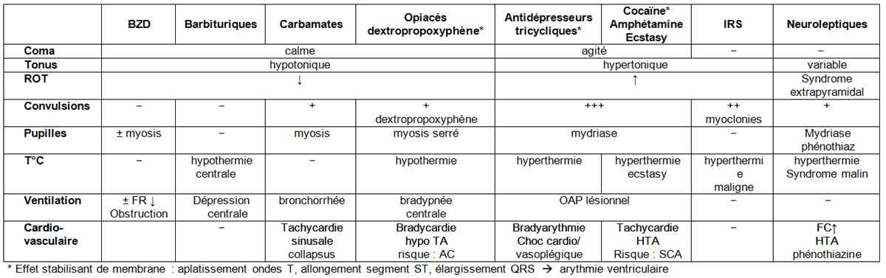

Bienvenue Sur Medical Education
Coma chez l'adulte
Spécialité : neurologie / symptômes /
Points importants
DEFINITION
- Etat associant l'absence d'ouverture des yeux spontanée ou provoquée, d'émission verbale et de réponse aux ordres, non réversibles par la stimulation.
-
Résultat d'une abolition de la conscience et de la vigilance.
Présentation clinique / CIMU
CONTEXTE
- Enquête auprès de l'entourage, témoins, service de secours
Terrain
- Mode de vie
- Habitudes addictives
Antécédents
- Diabète
- ATCD vasculaires (HTA, AVC)
- Ethylisme, toxicomanie
- ATCD psychiatriques (dépression, tentative de suicide)
- ATCD épileptiques
- Etat septique récent
- VIH
- Voyage en pays tropical...
Traitements suivis/automédication/ordonnances
- Sédatifs, psychotropes, cardiotropes, insuline, antidiabétiques oraux, anti-coagulants
Facteurs de risque
- Exposition professionnelle ou domestique potentielle à des toxiques (CO, organophosphorés)
Circonstances de survenue
- Mode d'installation du coma : brutal ou progressif ?
- Lieu où a été retrouvé le patient (domicile, travail, voie publique, pièce avec atmosphère confinée)
- Contexte : traumatique/intervalle libre, emballage de médicaments aux alentours, symptômes annonciateurs (céphalée, vomissements, déficit focal), fièvre/infection
- Signes d'accompagnement : mouvements anormaux, crise d'épilepsie
EXAMEN CLINIQUE
Examen clinique rapide
-
Recherche de signes de gravité immédiate :
- glycémie capillaire : Hypoglycémie
- ventilation : cyanose, encombrement bronchique, signes de détresse respiratoire aiguë, fréquence respiratoire
- hémodynamique : hypo ou hyperTA, signes d'hypoperfusion périphérique
-
profondeur du coma (
 Glasgow)
Glasgow)
Examen clinique complet
-
Examen neurologique : examen répété et consigné par écrit :
- syndrome méningé
-
signes de localisation :
- motricité : membres à mouvements spontanés (clonies)/ asymétrie de la face à clonies paupières; manoeuvre de Pierre-Marie et Foix recherchant une paralysie faciale
-
ROT/RCP : signe de Babinski ?
-
respiration : rythme/amplitude
-  _40 Coma : étude de la respiration
- tonus musculaire :
- hypotonie / hypertonie généralisée
-
respiration : rythme/amplitude
-
Examen des yeux +++ :
- tonus palpébral
-
clignement réflexe (VII) :
- menace : persistance du degré d'activation corticale
- stimulation lumineuse/sonore : intégrité voie sensorielle
- réflexe cornéen : abolition = atteinte protubérantielle basse
-
étude des pupilles : diamètre, symétrie, réflexe photomoteur
-  _41 Coma : étude des pupilles
-
position des globes oculaires
-  _630 Tableau Coma : position des globes oculaires
-
mouvements spontanés des globes oculaires :
- mouvements d'errance oculaire : (protubérance, III/VI)
- « Boobing » oculaire : succession irrégulière d'abaissements rapides/remontées lentes des globes (protubérance)
- nystagmus convergent : (mésencéphale)
- réflexes du tronc cérébral (mouvements oculaires réflexes)
-
Echelle de Glasgow Liège : score Glasgow + cotation des 5 réflexes du tronc
-
HTIC grave :
-
signes d'engagement
-  _631 Tableau Coma : signes d'engagement cérébral
-
signes annonciateurs d'engagement :
- aggravation de la profondeur du coma
- troubles circulatoires : tachycardie puis bradycardie, troubles du rythme, HTA, hypersudation
- troubles respiratoires : polypnée, irrégularité respiratoire
- troubles de thermorégulation : hypothermie
- troubles digestifs : hoquet, bâillements
- troubles du tonus : hypertonie cervicale (engagement amygdales cérébelleuses)
-
signes d'engagement
-
HTIC grave :
-
Examen général :
-
complications :
- signes d'inhalation (encombrement bronchique, foyer pulmonaire)
- points de compression (rhabdomyolyse), syndrome de loge
-
signes généraux étiologiques (cf. diagnostic étiologique)
- signes de traumatisme crânien : embarrures, contusion/hématome du scalp, écoulement sang/LCR par orifices de la face
- signes d'intoxication : traces d'injection, haleine énolique
- signes infectieux : hyper/hypothermie (étiologie ou conséquence du coma), purpura fulminans
- stigmates de convulsions : morsure latérale de langue ± perte d'urines
- signes cardiovasculaires : souffle carotidien, arythmie
- signes d'affection systémique endocrinienne ou systémique
-
complications :
EXAMENS PARACLINIQUES SIMPLES
- Glycémie capillaire : hypoglycémie profonde
- ECG : troubles du rythme (fibrillation auriculaire/troubles du rythme ventriculaire)
- Fond d'oeil (sans utilisation de mydriatique) : oedème papillaire (HTIC), hémorragie rétro-hyaloïdienne (rupture d'anévrysme)
CIMU
- Tri 1 : Coma avec troubles végétatifs (défaillance hémodynamique/ respiratoire, signe d'HTIC), cause indéterminée
-
Tri 2 : Coma sans troubles végétatifs, cause indéterminée
Signes paracliniques
BIOLOGIQUE
Coma de cause évidente
- Coma hypoglycémique : pas d'examen biologique nécessaire
- Coma toxique (alcool et/ou médicaments) avec toxidrome évocateur/nature des médicaments connue (psychotrope type benzodiazépine) : pas de dosage de toxiques nécessaires
Coma de cause indéterminée
- NFS/plaquette, TP/TCA
- Ionogramme sanguin, urée, créatinine, glycémie, calcémie
- BHC, CPK
- Gaz du sang, lactates
- Alcoolémie (explique le coma si OH > 3-4g)
- Recherche toxiques urinaires et sanguins (+ 1 tube au réfrigérateur)
IMAGERIE
- Radio thorax (foyer d'inhalation)
EN FONCTION DE L'ETIOLOGIE, COMPLETER PAR :
Biologie
- Toxique (HbCO, ammoniémie, bilan endocrinien...)
- Frottis sanguin/Goutte épaisse (neuropaludisme)
- Hémocultures
TDM cérébrale sans injection + fenêtres osseuses + coupes cervicales : suspicion cause neurologique (trauma/vasculaire/abcès/tumeur) ou cause indéterminée
EEG
- Etat de mal épileptique infraclinique
- Encéphalite
PL : devant tout coma fébrile (d'emblée, en l'absence de signes de localisation)
IRM : phase précoce (< 4h)
- AVC ischémique
-
Méningo-encéphalite
Diagnostic étiologique
CAUSES TRAUMATIQUES
Contexte
- AVP
- Ethylisme aigu
- Notion de chute avec intervalle libre
Présentation
- Embarrures
- Contusion/hématome du scalp
- Ecoulement sang/LCR par orifices de la face
Diagnostic : TDM cérébral
- Hématome extradural
- Hématome sous-dural
- Hématome intra-cérébral, hémorragie méningée post-traumatique
- HTIC (oedème, contusion)
CAUSES NON TRAUMATIQUES
Coma de cause non structurelle = coma sans signe focal, sans signe méningé
-
Coma métabolique = installation progressive/fluctuante
-  _632 Tableau Coma métabolique : anamnèse, examen neurologique et général
-
Coma toxique :
- contexte : sujets souvent jeunes, ATCD tentative de suicide/IMV/pathologie psychiatrique, ATCD overdose, traces de piqûres, emballage à proximité
-
causes des comas toxiques en fonction de la symptomatologie
-  _633 Tableau Coma toxique : causes en fonction de la symptomatologie
-
symptomes en fonction des toxiques
-  _634 Tableau Coma toxique : symptômes en fonction des toxiques
- coma calme, hypotonique
- pupilles : mydriase
- convulsions
-
intoxication au CO :
- coma agité, hypertonique
- ROT vifs, trismus
- convulsions
- hyperthermie, sueurs, coloration rosée « cochenille » des téguments
- HTA, tachycardie, troubles du rythme :
-
coma épileptique infraclinique : Etat de mal non convulsivant
- contexte : épilepsie connue, rupture traitement
- tableau : perte d'urines, morsures latérales de langue, respiration stertoreuse
Coma de causes structurelles
- Mode d'installation : brutal
- Symptômes initiaux neurologiques : HTIC, syndrome méningée, signes focaux
- Terrain : cardiovasculaire, facteurs de risque hémorragique, éthylisme chronique
-
Coma sans signes focaux, avec signes méningés :
-
le plus souvent non fébrile :
- hémorragie méningée (inondation ventriculaire massive/HTIC)
- engagement du tronc cérébral (amygdales cérébelleuses)
- HTIC
-
fébrile :
- méningite bactérienne : méningocoque (Purpura Fulminans)
- méningo-encéphalite bactérienne (listériose/BK)
- méningite puriforme aseptique : foyer ORL, empyème sous dural
- accès pernicieux palustre : contexte retour de zone d'endémie
- coma fébrile d'aggravation rapide + souffrance temporale : méningoencéphalite herpétique
-
le plus souvent non fébrile :
-
Coma avec signes focaux :
-
signes moteurs :
- hypoglycémie
-
installation brutale :
- hémorragie cérébrale, AVC hémorragique
- hémorragie méningée associée à hématome intra parenchymateux ou vasospasme
- infarctus du tronc cérébral
- épilepsie compliquée (traumatique, vasculaire)
-
installation retardée :
- AVC ischémique hémisphérique
- infarctus cervelet
- encéphalopathie hypertensive
- thrombophlébite cérébrale
-
installation progressive :
-
processus expansif intracrânien (tumeurs/HSD chronique/abcès)
-
processus expansif intracrânien (tumeurs/HSD chronique/abcès)
-
signes moteurs :
Diagnostic différentiel
« LOCKED IN SYNDROME »
Lésion du pied de la protubérance, bilatérale / occlusion tronc basilaire, myélinolyse centropontine
- Tétraplégie
- Diplégie faciale
- Paralysie labio-glosso-pharyngée
- Paralysie latéralité du regard
- Conservation ouverture et verticalité des yeux
MUTISME AKINETIQUE
Lésions frontales bilatérales / Infarctus bilatéral de l'artère cérébrale antérieure, hydrocéphalie aiguë
- Réponses motrice/verbale nulles
- Trouble majeur de l'attention
- Signes d'éveil, conservation mouvements conjugués des yeux + clignement à la menace
COMA PSYCHOGÈNE
Simulation et conversion hystérique
- Conditions de survenue
- Résistance à l'ouverture des yeux
- Clignement à la menace
- Evitement de la face lors de la chute provoquée du membre supérieur au-dessus du visage
- Respiration par la bouche au pincement du nez
- Diagnostic retenu avec prudence à affirmation : EEG
HYPERSOMNIES
- Narcolepsie, syndrome d'apnée du sommeil, trypanosomiase africaine
-
Accès de sommeil rapidement réversibles avec restauration immédiate de la conscience
Traitement
MESURES IMMEDIATES
- Scope, oxymétrie
-
Recherche d'une cause pouvant nécessiter un traitement étiologique urgent :
- hypoglycémie à 1 ampoule G30% IVD puis perfusion de G10%
- purpura fébrile : céfotaxime 2g IVD
- intoxication aux benzodiazépines : Flumazénil
- intoxication aux opiacés : Naloxone
- traitement anti-épileptique : clonazépam 1 mg IVD
- Pour tout coma autre que l'hypoglycémie : pose d'un NaCl 0,9%
-
Oxygénothérapie au masque à haute concentration ± IOT (GCS < 8 ou s'aggravant rapidement, cause non rapidement réversible, bradypnée, pauses respiratoires, inhalation, hypoxémie majeure réfractaire à l'O2)
- Contrôle hémodynamique
- Discuter : si doute sur encéphalopathie Gayet Wernicke + charge en glucose : 1 ampoule de vit B1 500mg
- Avis réanimateur/neurochirurgical en fonction du contexte++
TRAITEMENT ETIOLOGIQUE
- Traitement d'un engagement cérébral : mannitol 20% en attendant transfert en neurochirurgie
MESURES SECONDAIRES
- Sondage vésical : quantification diurèse/24h
- Sondage gastrique : si IOT
- Hydratation
-
Maintien de l' HTA réactionnelle en cas de causes traumatique, vasculaire
Surveillance
CLINIQUE
-
Examen neurologique régulier (consigné par écrit) : GCS, pupilles, position des globes oculaires, signe de localisation
- FC, PA, FR / h
- Température / 4h
-
Diurèse / h
Devenir / orientation
CRITERES D'ADMISSION
- Hospitalisation systématique
-
Indications d'hospitalisation en neurochirurgie :
- hématome
- embarrures
- certaines tumeurs
- abcès cérébraux, empyème sous-duraux compliquant un TC
-
Indications d'hospitalisation en Réanimation :
- tout coma toxique ne répondant pas aux antidotes ou nécessitant surveillance scopique après réveil
- tout coma métabolique (cas particulier : coma hypoglycémique sous insuline)
- tout coma septique, vasculaire
-
SAUV :
- toxiques avec antidotes (psychotropes type BZD, opiacés)
- coma hypoglycémique
CRITERES DE SORTIE
- Coma hypoglycémique (DID)
-
Comas toxiques (BZD / opiacés) :
- obtention d'un réveil complet (réponse aux antidotes)
- pas de nécessité d'hospitalisation en psychiatrie après avis spécialisé
-
pas de complication clinique (rhabdomyolyse, inhalation)
Mécanisme / description
ETAT NORMAL
- Conscience = état d'activation corticale (perceptivité/cognition).
- Veille/Vigilance = état d'activation sous corticale ascendante assurée par la formation réticulée activatrice ascendante (FRAA)
COMA = défaillance de la FRAA, par :
-
Lésion cérébrale focale :
- lésion sus-tentorielle interrompant les projections de la FRAA vers le cortex
- lésion sous-tentorielle détruisant/comprimant la FRAA
- lésion hémisphérique comprimant la région mésencéphalo-diencéphalique (engagement temporal ou central)
-
Souffrance cérébrale diffuse (cas le plus fréquent) : toxique, métabolique, anoxie, épileptique...
Algorithme
- Algorithme : coma
Algorithme
Algorithme : coma
Bibliographie
- Danziger N. Neurologie 3e. Eition Estem.
- Liot P et Outin H. Comas. Encycl Méd. Chir (Editions Scientifiques et Médicales Elsevier SAS, Paris, tous droits réservés), Neurologie, 17-023-A-10, 2002, 10p.
- Plum F, Posner J. Diagnostic de la stupeur et des comas, 2e ed Masson
- Carli Riou Télion. Urgences médico-chirurgicales de l'adulte, 2e ed Arnette
- Revue du praticien 2006 ; 56 n° 7 « Détresses vitales de l'adulte (I) ; Troubles graves de la vigilance »
- Collège des Enseignants de Neurologie 2002 « Les comas non traumatiques »
- D. Bates, "The management of medical coma" Journal of Neurology, Neurosurgery, and Psychiatry 1993;56:589-598
- D. Bateman, "Neurological assessment of coma" J Neurol Neurosurg Psychiatry 2001;71(suppl I):i13-i17
- "An approach to critically ill patients in coma" West J Med 2002;176:184-187
- Chillet, Urgences neurologiques 2004
- B. Mégarbane, F. Baud « Principales intoxications aiguës » Revue du praticien 2006 ; 56
Auteur(s) : Fabienne MARCOUYOUX, Patrick PLAISANCE